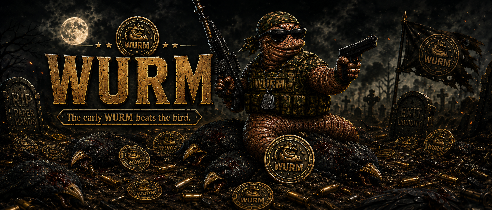
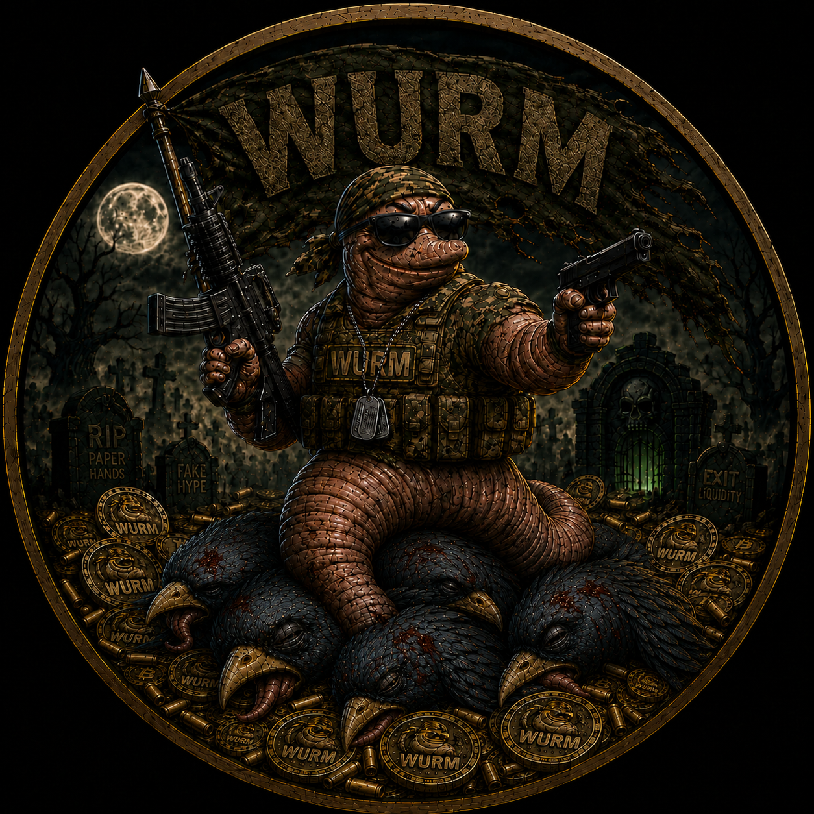

The early WURM beats the bird.
Ticker: WURM
WurmCoin is testnet only.
No mainnet WURM exists yet.
Do not trust fake contracts.
WurmCoin does not promise profit and is not being promoted as an investment.
Network: Base Sepolia Testnet
0xbeb5fb38f93046c3CA4b37bF2f455832CdA9A3Df
Website:
https://wurmcoinhq.github.io/wurmcoin-site/
X / Twitter:
Telegram: Not used yet.
Discord: Not created yet.
WurmCoin is a transparent meme/community project built around clear public status, testnet verification, and no fake hype.
This page is for a testnet project only.
No mainnet WURM exists yet.
Do not buy fake WURM tokens or trust unofficial contracts.
Nothing on this website is financial advice.